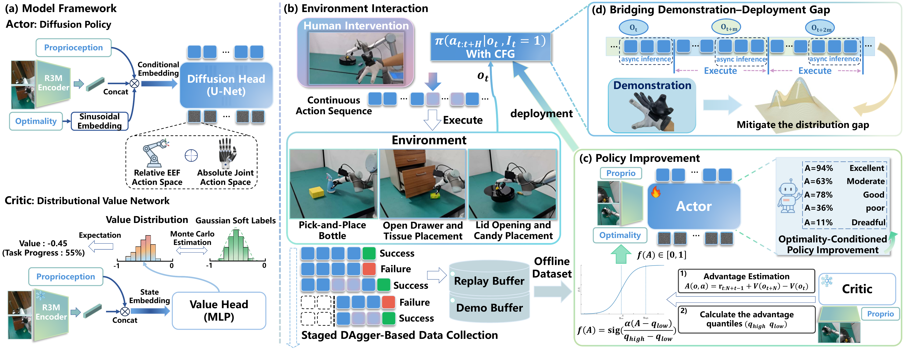
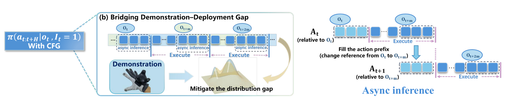
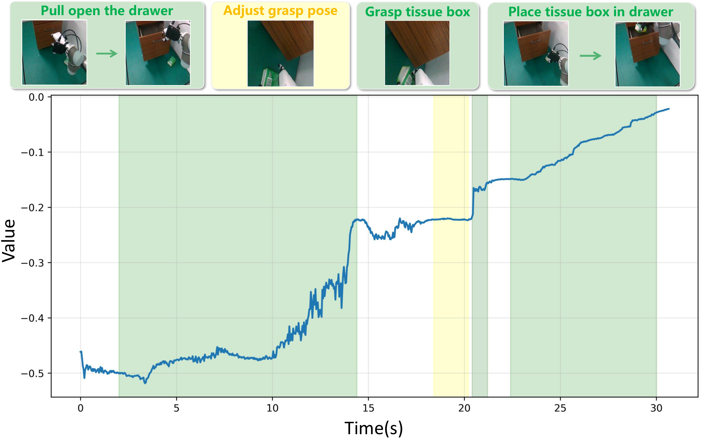
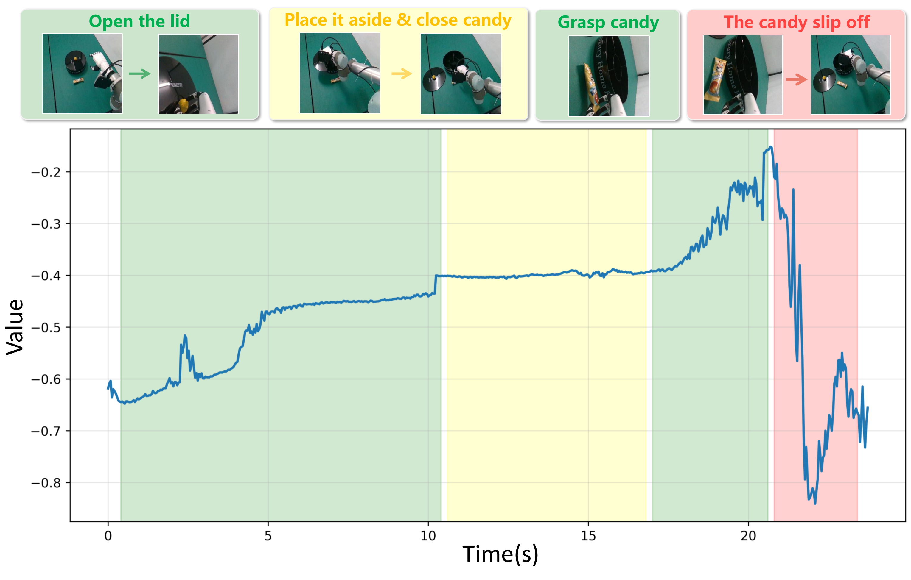
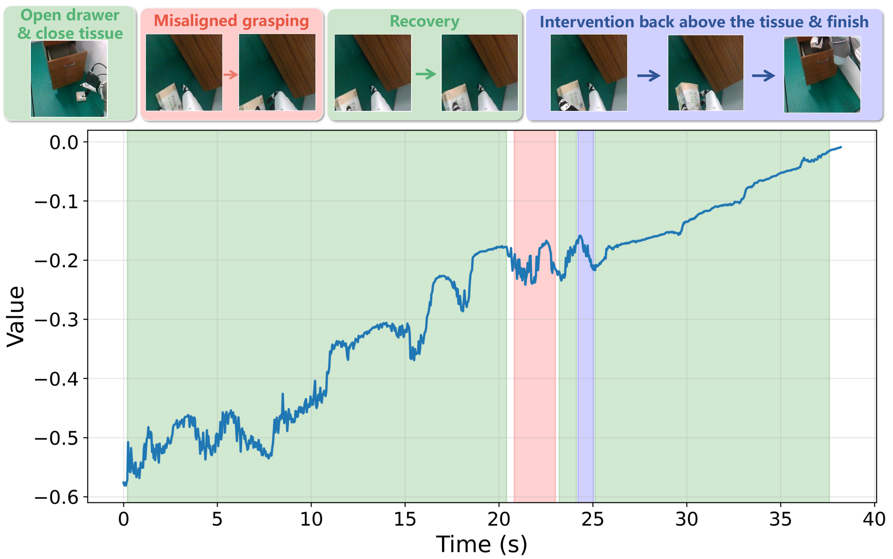
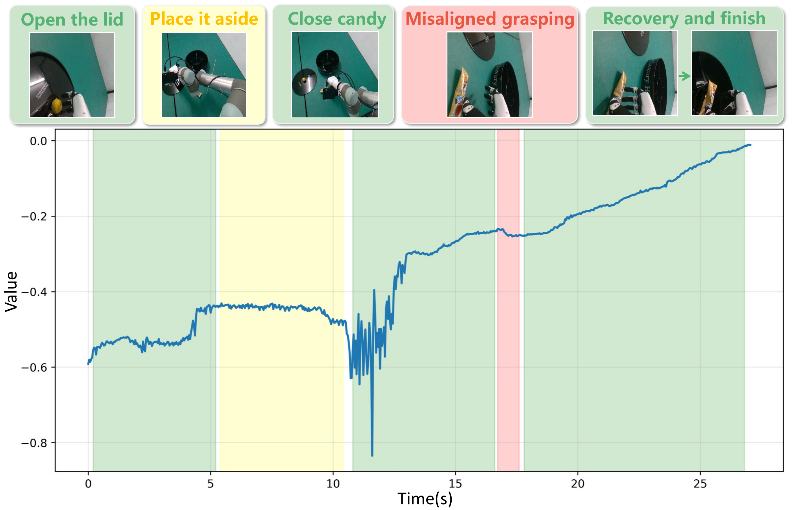
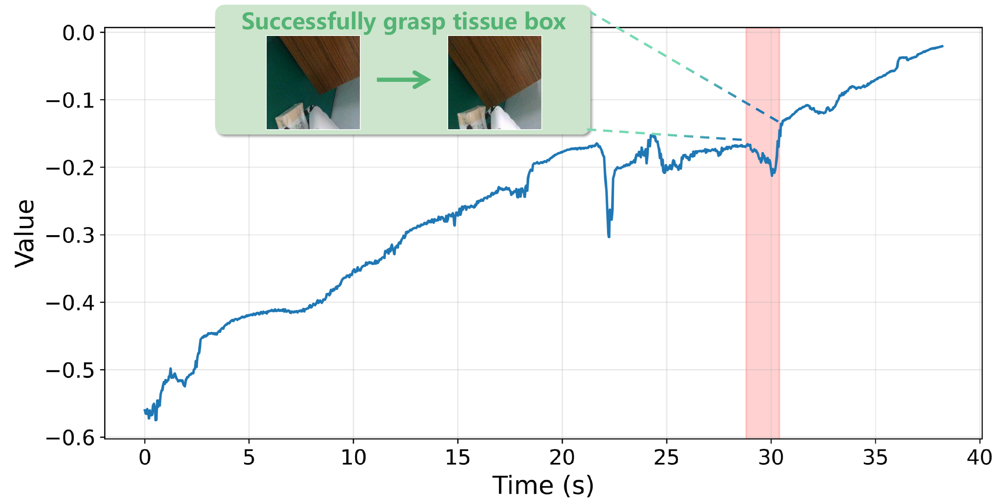
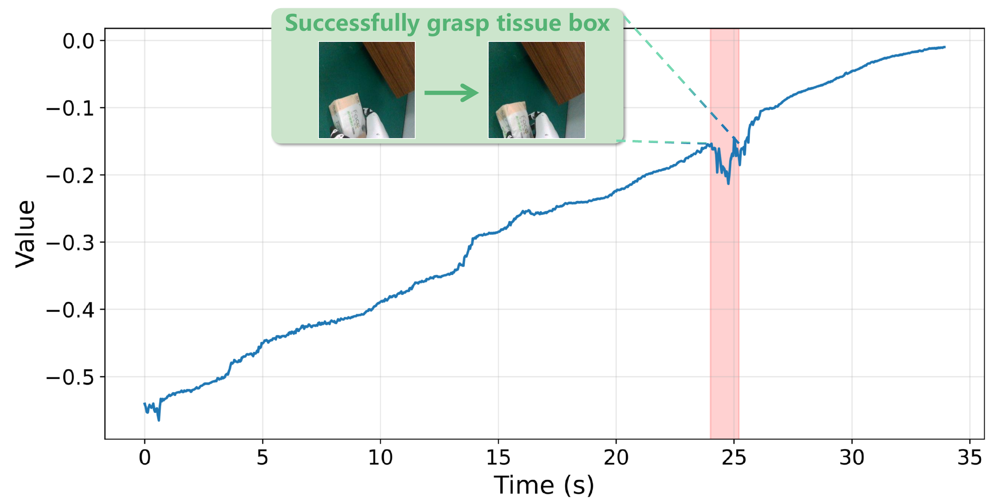
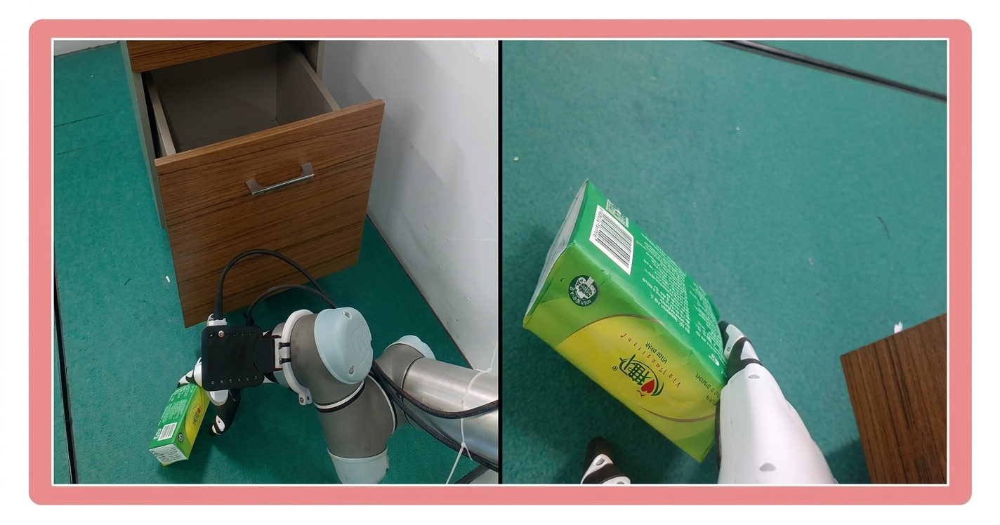

DexPIE: Stable Dexterous Policy Improvement from Real-World Experience
Abstract
Dexterous manipulation presents substantial challenges for imitation learning due to its high-dimensional action space and complex contact-rich dynamics. Policies trained purely from demonstrations often suffer from compounding errors during deployment and require large amounts of expert data to achieve reliable performance. To move beyond the limitations of demonstration data, in this work, we propose DexPIE, a post-training framework for dexterous policy improvement from experience collected through real-world deployment. First, DexPIE enables effective exploration coverage through a dexterous-hand-adapted intervention system and multi-stage DAgger-style data collection across initial and intermediate task stages, providing reliable supervision for accurate policy evaluation. To reduce temporal noise between post-training rollouts and demonstration data, we introduce asynchronous inference in the relative action space, which better aligns rollout data with demonstrated behavior and allows the critic to learn a value function induced by a more consistent underlying policy. Finally, DexPIE improves the policy through conditioning on a continuous optimality indicator, allowing the policy to leverage the quality of data in a more fine-grained manner. Across three challenging real-world dexterous manipulation tasks, DexPIE achieves a 37% improvement in success rate over the demonstration-based reference policy, outperforming all baseline methods and demonstrating stronger robustness. The source code and dataset will be made publicly available.
Method

Human-in-the-loop Data Collection
Bridging Demonstration-Deployment Gap via Asynchronous Inference

As illustrated by this example, different inference settings can lead to substantially different outcome qualities under nearly identical states. Although incorporating failure data is desirable in our post-training setting, we expect such failures to arise from insufficient coverage of the model’s intrinsic behavior distribution, rather than from distribution shifts caused by temporal noise. This mismatch introduces demonstration-deployment gap, forcing the critic to fit a value function induced by a heterogeneous mixture of inconsistent behaviors, making value estimates unreliable and weakening the credit assignment signals used to identify truly suboptimal trajectory segments.
Value Function Visualization




Staged DAgger provides intermediate anchors for learning progress-aware values, effectively decomposing long-horizon tasks into shorter task segments. Benefiting from exploration coverage across different task stages, the learned value function accurately captures task progress and identifies failure modes, providing reliable credit assignment.
Special Credit-Assignment Failure Case



During our experiments, we have observed a special case of incorrect credit assignment. In one data-collection process, the robot repeatedly collides with the table, triggering collision detection and terminating the rollout. We label these trajectories as failure trajectories. As shown in the video below, we visualize the image observation at the terminal state of one such failure trajectory. However, from the image observation alone, the value function cannot accurately attribute the failure to the grasp position being too low. Instead, as shown in the two value-function visualizations above, it assigns lower values to states where the robot approaches the tissue box for grasping, resulting in incorrect credit assignment. This misattribution further causes the policy to avoid approaching the tissue box during deployment, leading to repeated grasp failures, as shown in the video below. To mitigate this issue, we filter out such failure trajectories to avoid misleading credit assignment and use human intervention to correct the collision behavior. This observation suggests that such incorrect credit assignment can be mitigated in two ways: either by incorporating richer information into the critic to better identify failure modes, or by filtering failure trajectories whose causes are difficult to infer from visual observations alone, making the remaining failure data more suitable for visual critic learning. In practice, it is not sufficient to simply introduce failure data; the critic must also be able to correctly recognize and attribute the underlying erroneous behaviors.
BibTeX
@article{liao2024dexpie,
title={DexPIE: Stable Dexterous Policy Improvement from Real-World Experience},
author={Ruizhe Liao and Wenrui Chen and Liangji Zeng and Haoran Lin and Fan Yang and Kailun Yang and Yaonan Wang},
journal={Conference/Journal Name},
year={2024},
url={https://siiuuuuu.github.io/DexPIE}
}